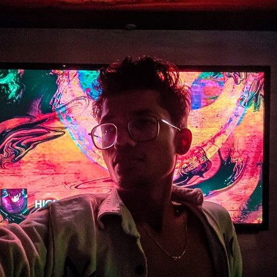

Hi, It's SOHAM
I'm a
"Your work is going to fill a large part of your life, and the only way to be truly satisfied is to do what you believe is great work. And the only way to do great work is to love what you do. If you haven't found it yet, keep looking. Don't settle. As with all matters of the heart, you'll know when you find it. And, like any great relationship, it just gets better and better as the years roll on." - Steve Jobs
